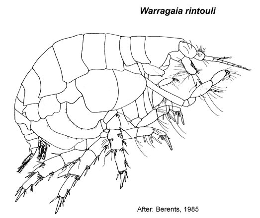

Warragaia Berents, 1985: 253
Type species. Warragaia rintouli Berents, 1985, by monotypy.
Description.Maxilla 1 palp with apical group of setae only.
Gnathopod 1 simple; coxa subequal in size to coxa 2. Pereopod 3 coxa subequal in size to coxa 4. Pereopod 5 dactylus without robust setae. Pereopod 7 coxa without long posterior spine; basis fully expanded.
Uropod 1 inner ramus absent or vestigial, fused to peduncle. Uropod 2 inner ramus absent or vestigial, not fused to peduncle. Telson entire.

___________________________
This
publication should be cited as: Kilgallen, N.M. & Lowry, J.K. 2008.
Urohaustoriidae (Amphipoda): World Genera and Species. Version 1. 1
January 2008. https://crustacea.net.